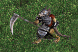

| Original Name | Nom Français |
| Skraug Bigworviktor | Skraug Bigworviktor |
|
 |
|
| Lieu |
| Village des Skraugs vert et ses alentours, cave des Skraugs |
| Drops |
| Potion de guérison critique - Amethyste Brute - Bouclier Sombrebois (r) - Cristal Brut |
| Commentaires |
| 1 Commentaires |
|
Volcom
Messages: 34 |
- en 3 ans de T4C il a droppe le sombrebois une seul fois
Posté le : 27-02-2004 01:31:40 |